Ding Dong! Merrily On High ding-dong-merrily-on-high.abc
4 声部、歌词、M:none

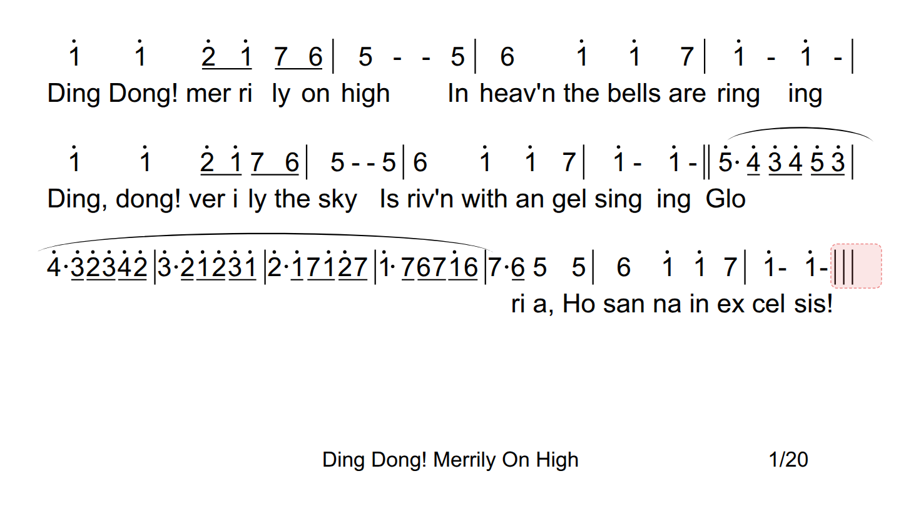
abcjs 音符数：原始 242 / 往返 242 Dolce 五线谱未切换（仍为简谱）；abcjs 出 4 声部但歌词重叠
简谱由 Dolce 直接渲染 123；五线谱分别由 Dolce（123 投影）和 abcjs（原始 ABC / 往返 ABC）渲染。图片为页面元素截图，红色框是自动化点击留下的选中态。
accents.abc语法夹具：滚音/跳音/上下弓
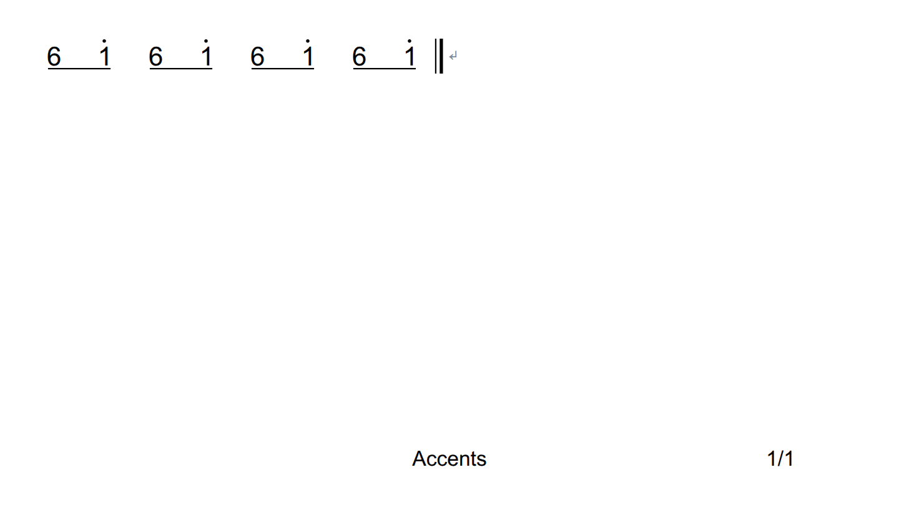
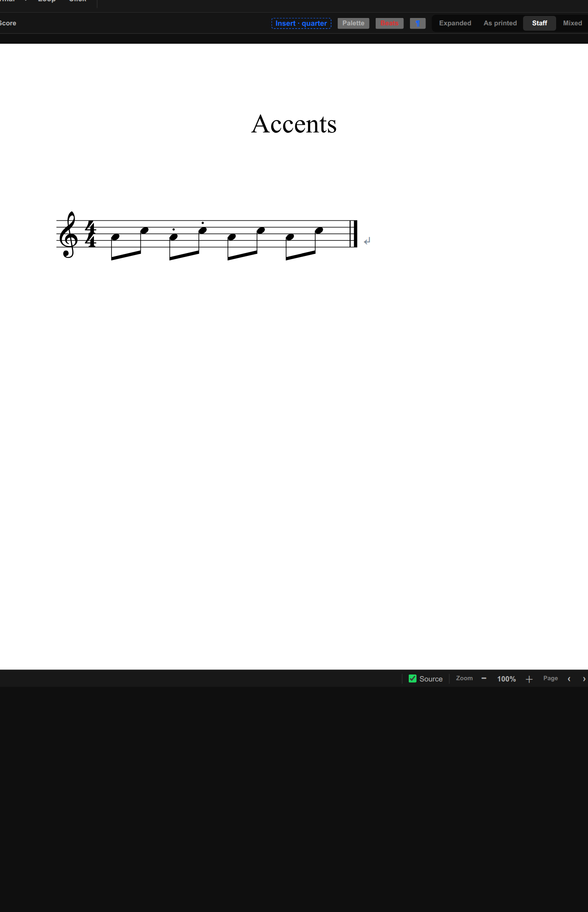
abcjs 音符数：原始 8 / 往返 8 abcjs 丢装饰；Dolce 五线谱保留跳音点
ties-and-slurs.abc跨小节延音/连音、嵌套弧
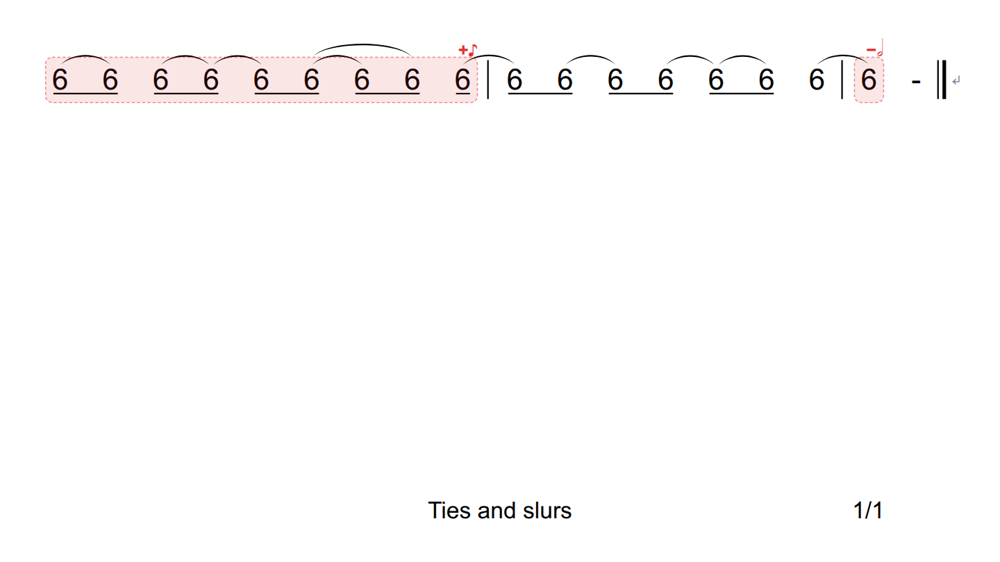
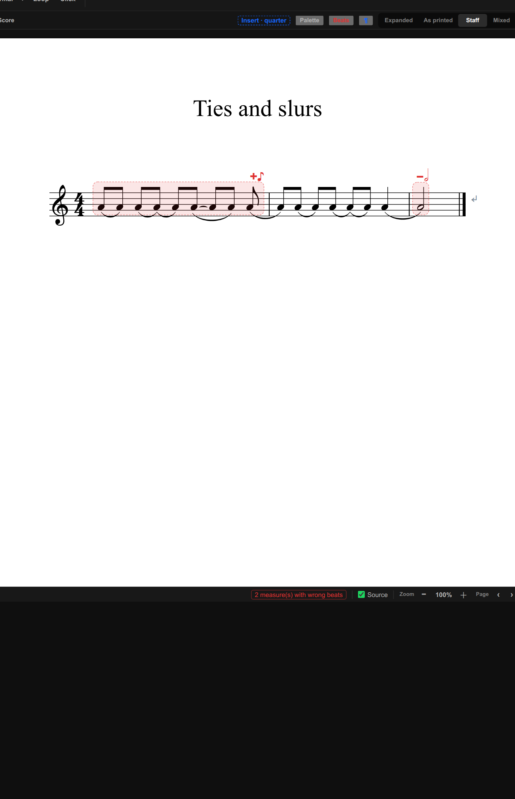
abcjs 音符数：原始 17 / 往返 17 直出与往返五线谱外观基本一致；延音线以弧线呈现
amazing_grace.abc歌词、三连音、多段词
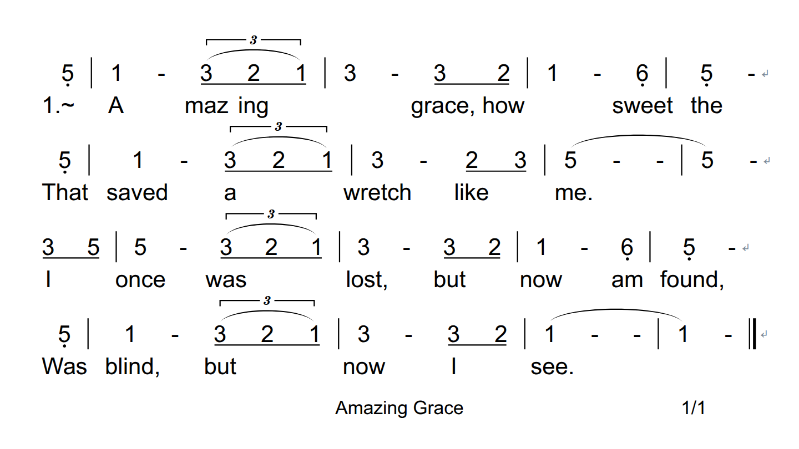
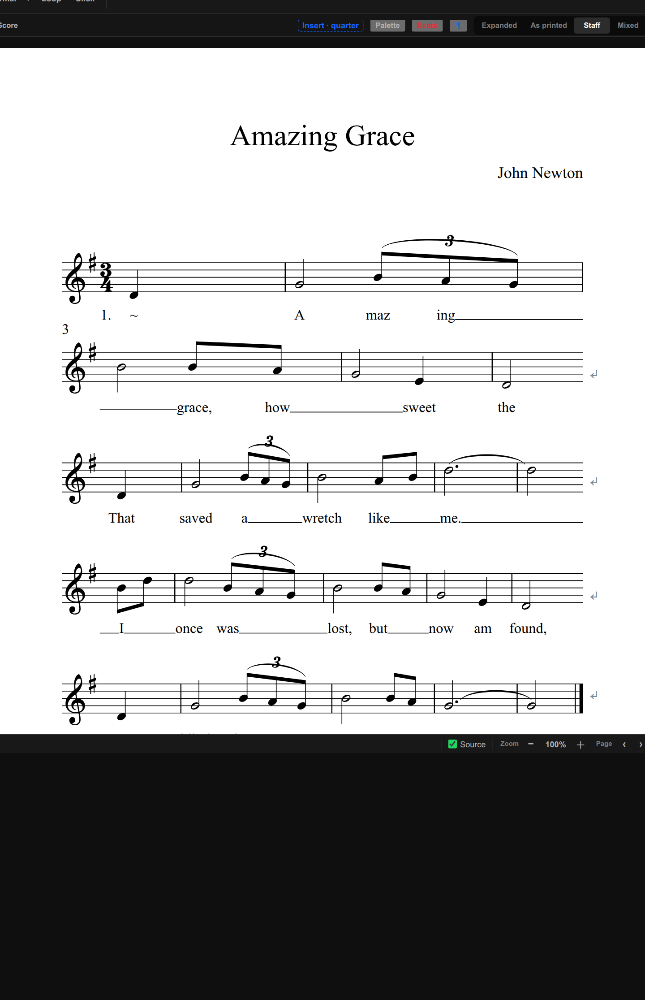
abcjs 音符数：原始 43 / 往返 43 简谱与五线谱均出歌词；首字前多出段号 1.
ding-dong-merrily-on-high.abc4 声部、歌词、M:none

abcjs 音符数：原始 242 / 往返 242 Dolce 五线谱未切换（仍为简谱）；abcjs 出 4 声部但歌词重叠
bad_apple.abc密集谱、转调、和弦段
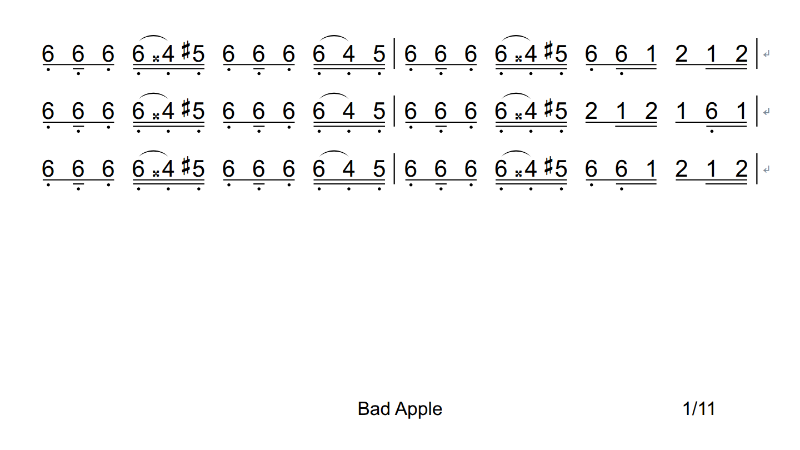
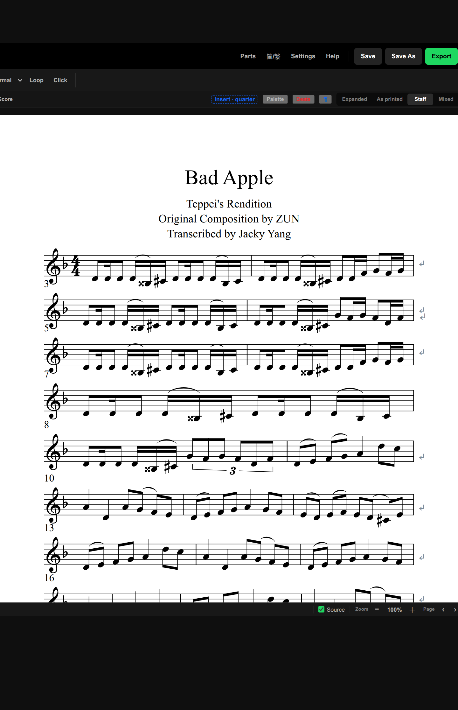
abcjs 音符数：原始 737 / 往返 737 简谱显示“转1=B”；五线谱音符/连音/三连音正常
jericho-(chord-symbols).abc和弦符号 Dm/A7、Fine
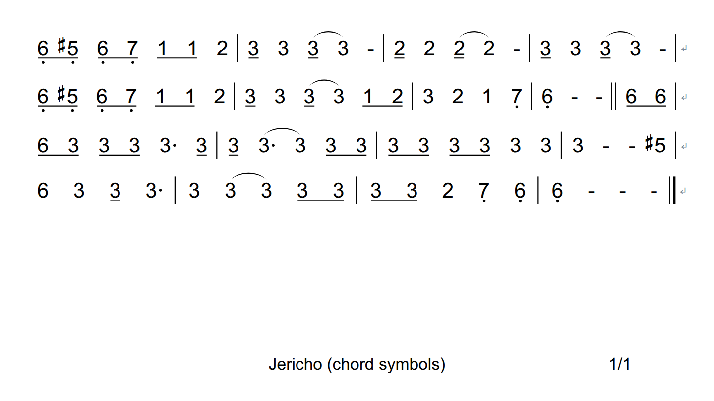
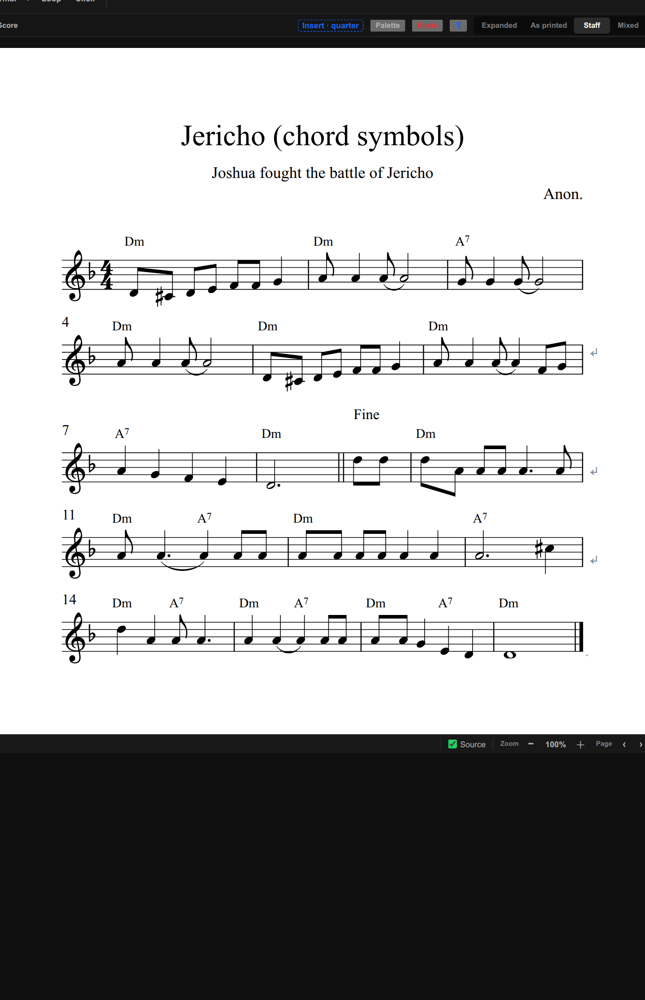
abcjs 音符数：原始 73 / 往返 73 Dolce 五线谱显示 Dm/A7 与 Fine；简谱视图不显示和弦符号